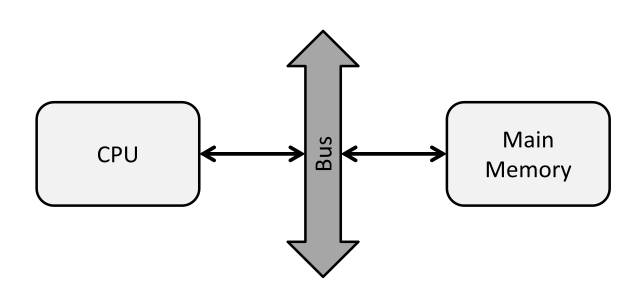
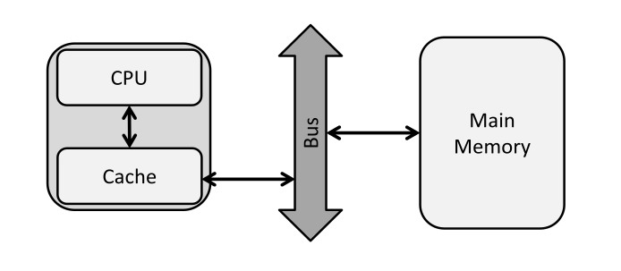
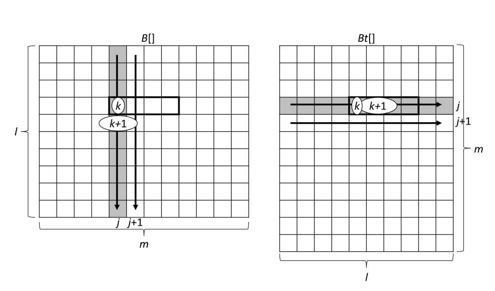
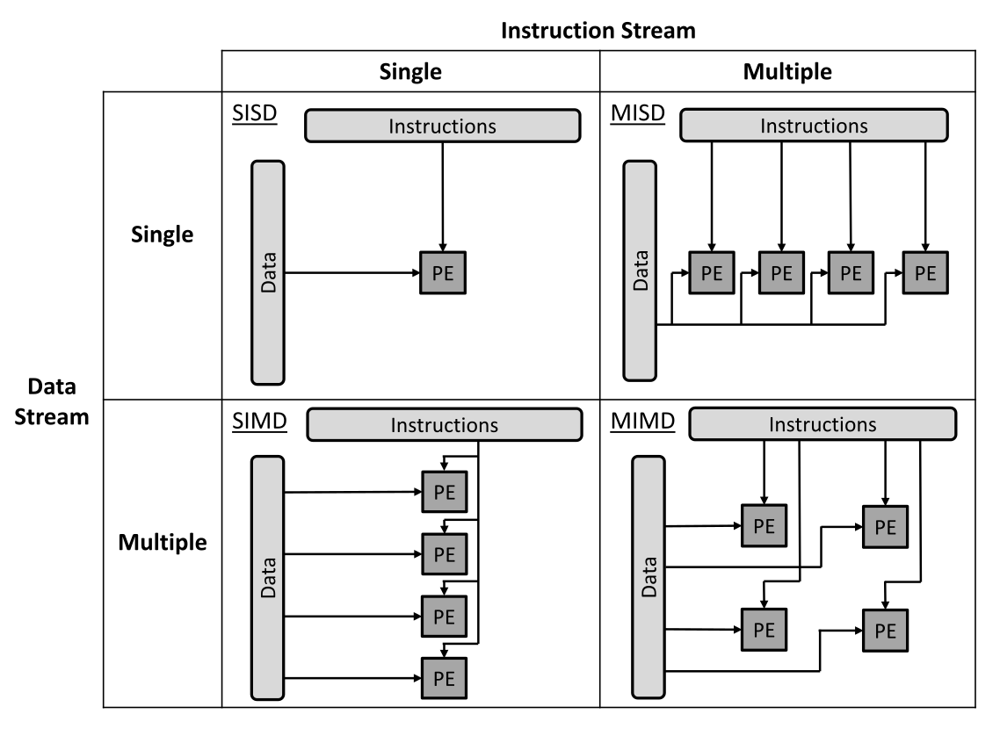
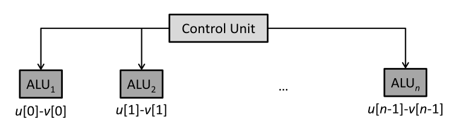
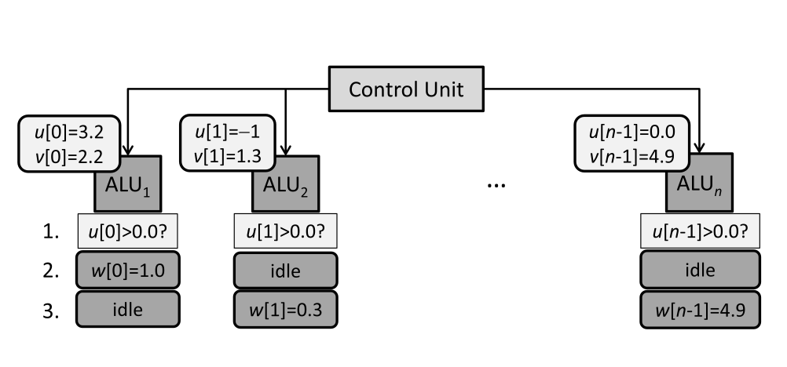
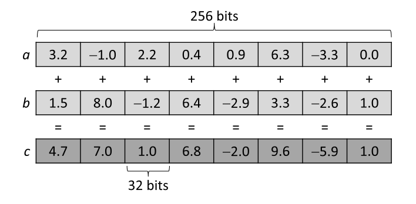
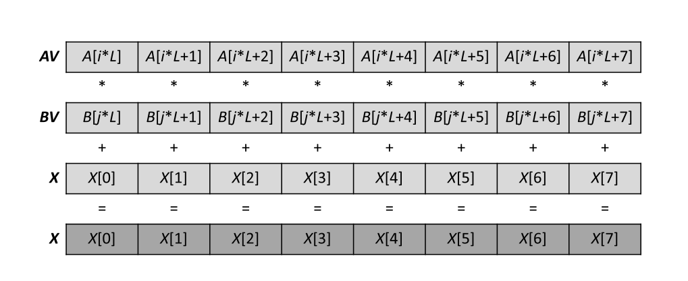
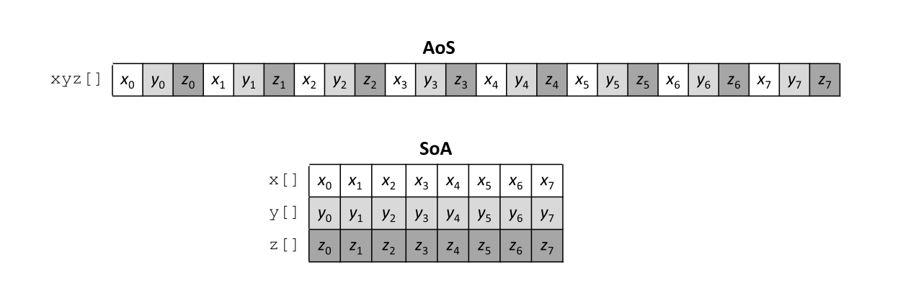
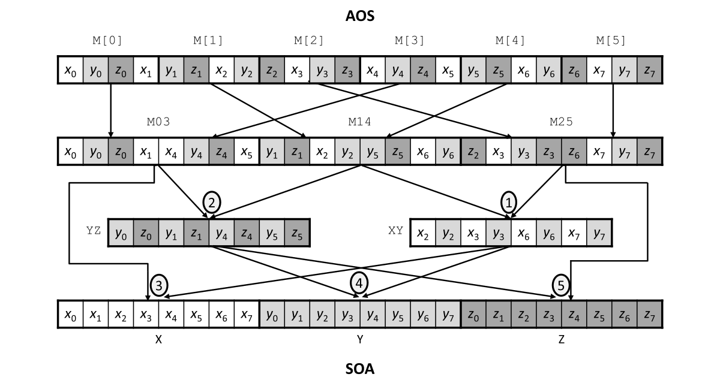

Modern Architectures
Memory hierarchy: von Neumann bottleneck
In a classic von Neumann architecture a CPU is connected to main memory through a bus.
Memory hierarchy: von Neumann bottleneck
CPU compute speeds are now much higher than memory access speeds: von Neumann bottleneck.
Example: 8 core CPU, 3 GHz clock frequency, we assume 16 double-precision flops per clock cycle.
Peak compute performance $3$ GHz $\times 8 \times 16 = 384$ GFlops/s.
Peak memory transfer rate of connected DRAM module is $51.2$ GB/s.
Memory hierarchy: von Neumann bottleneck
Consider the dot product of two large vectors ($n = 2^{30}$):
double dotp = 0.0;
for (int i = 0; i < n; i++)
dotp += u[i] * v[i];Two operations in each iteration: $2 \cdot n = 2^{31}$ Flops. Memory transfer of $2^{31} \times 8$ B $= 16$ GB.
Memory hierarchy: von Neumann bottleneck
- Computation: $t_{comp}$ = 2 GFlops/384 GFlops/s = 5.2 ms.
- Data transfer: $t_{mem}$ = 16 GB/51.2 GB/s = 312.5 ms.
Thus, assuming overlap of computation and memory access, $t_{exec} \geq \text{max}(t_{comp},t_{mem}) = 312.5$ ms.
The data transfer time dominates. Data is used once with no re-usage: this computation is memory-bound.
Maximum acheivable performance is therefore $2^{31} \text{Flop}/312.5 \text{ms} = 6.4$ GFlop/s, 2% of peak performance.
Memory hierarchy: von Neumann bottleneck
To avoid this bottleneck, CPUs now have "on-board" fast memory referred to as cache.
Memory hierarchy: von Neumann bottleneck
Typically there are $3$ levels, L1, L2 and L3, on a modern CPU. GPUs typically have $2$ levels.
L1 is small and fast, L3 big and slow. Caches may be private for a single core or shared amongst several cores.

Cache memory
Consider same example again, 8-core 3 GHz CPU with 384 GFlop/s peak performance, main memory bandwidth of 51.2 GB/s.
Now add a (shared) cache of 512 KB, but assume access happens within a clock cycle (operates at register-speed).
Consider a matrix product operation, where all matrices are $n \times n$ with $n = 128$:
for (int i = 0; i < n; i++)
for (int j = 0; j < n; j++) {
double dotp = 0.0;
for (int k = 0; k < n; k++)
dotp += U[i][k] * V[k][j];
W[i][j] = dotp;
}Cache memory
Matrix dimensions are small: $128 \times 128 \times 8$ B $= 128$ KB per matrix (double precision), so all three ($3 \times 128 = 384$ KB) fit into cache.
For each of the $n^2$ values in $W$ we calculate a scalar product with $2\cdot n$ operations, so we have $2\cdot n^3 = 2\cdot 128^3 = 2^{22}$ Flops.
- Computation: $t_{comp} = 2^{22} \text{Flop}/384 \text{GFlop/s} = 10.4 \mu\text{s}$
- Data transfer: $t_{mem} = 384 \text{KB}/51.2 \text{GB/s} = 7.5 \mu\text{s}$ (to load all matrices into cache at start)
Cache memory
Due to usage of cache, we can re-use each element of the input matrices during the $n$ different scalar product calculations.
Compute time is now longer than data transfer: matrix multiplication is compute-bound (or CPU-bound).
Assuming no overlap of computation and transfer, $t_{exec} \geq t_{comp} + t_{mem} = 10.4 \mu\text{s} + 7.5 \mu\text{s} = 17.9 \mu\text{s}$.
This corresponds to $2^{22} \text{Flop}/17.9 \mu\text{s} = 223$ GFlop/s, 60% of peak performance.
Cache algorithms
Previous example assumed data fits into cache. This is usually not true.
We need a set of cache replacement policies (cache algorithms) to determine which data is stored in cache during execution.
Cache algorithms address the following questions:
- Which data do we load from main memory and where in cache do we store it?
- If cache is already full, which data do we evict?
Cache algorithms
When CPU requests a data item from memory, the cache is checked first to see if data is already there.
If so: cache hit. Otherwise: cache miss. Cache algorithms try to maximise the hit ratio.
The design of cache algorithms is guided by two principles:
- Spatial locality: contiguous memory locations.
- Temporal locality: cache data that was recently used is maintained in cache.
Cache algorithms: spatial locality
Consider the following code to determine the maximum value of an array $A$ of size $n$ (where the elements of $A$ are stored contiguously in memory).
for (int i = 0; i < n; i++)
maximum = max(A[i], maximum);- Assume cache is initially empty. In first iteration $A[0]$ is requested from memory: cache miss.
- Rather than one value, a cache line is loaded with values from neighbouring memory addresses.
- Assuming a $64$ B cache line and double-precision, this would load the eight values $A[0]$ to $A[7]$ into cache.
- The next seven iterations result in cache hits. The request for $A[8]$ is a cache miss, etc.
The hit ratio is 87.5% in this example.
Cache algorithms: temporal locality
Cache is organised into blocks (cache lines) of fixed size (e.g. $64$ B).
Cache mapping determines in which block a particular entry of main memory is stored:
- Direct-mapped cache: each block from memory is stored in exactly one cache line (typically low hit ratio).
- Two-way associative cache: each block from memory is stored in one of two possible cache lines. A strategy to decide which is least-recently used (LRU): we evict the least recently accessed entry (improves hit ratio substantially).
- $n$-way associative cache: usually with $n = 2$, $4$ or $8$. Fully associative caches are usually too expensive.
Cache algorithms: temporal locality

(A) direct-mapped, (B) two-way associative
Optimising cache access
- Consider matrix multiplication again, $A \cdot B = C$, with dimensions $m \times l$, $l \times n$ and $m \times n$.
- The matrices are stored in linear arrays in row-major order. The following C code implements the matrix multiplication in two ways.
#include <stdio.h>
#include <stdint.h>
#include <stdlib.h>
#include <time.h>
int main() {
const uint64_t m = 1 << 10;
const uint64_t n = 1 << 10;
const uint64_t l = 1 << 10;
clock_t t;
t = clock();
float* A = malloc(sizeof(float)*m*l);
float* B = malloc(sizeof(float)*l*n);
float* Bt = malloc(sizeof(float)*n*l);
float* C = malloc(sizeof(float)*m*n);
for (uint64_t i = 0; i < m*l; i ++){
A[i] = 0.0;
B[i] = 0.0;
Bt[i] = 0.0;
C[i] = 0.0;
}
t = clock() - t;
double time_taken = ((double)t)/CLOCKS_PER_SEC;
printf("init %f\n",time_taken);
t = clock();
for (uint64_t i = 0; i < m; i++) {
for (uint64_t j = 0; j < n; j++) {
float accum = 0;
for (uint64_t k = 0; k < l; k++) {
accum += A[i*l+k]*B[k*n+j];
}
C[i*n+j] = accum;
}
}
t = clock() - t;
time_taken = ((double)t)/CLOCKS_PER_SEC;
printf("naive %f\n",time_taken);
t = clock();
for (uint64_t k = 0; k < l; k++) {
for (uint64_t j = 0; j < n; j++) {
Bt[j*l+k] = B[k*n+j];
}
}
t = clock() - t;
time_taken = ((double)t)/CLOCKS_PER_SEC;
printf("transpose %f\n",time_taken);
t = clock();
for (uint64_t i = 0; i < m; i++) {
for (uint64_t j = 0; j < n; j++) {
float accum = 0;
for (uint64_t k = 0; k < l; k++) {
accum += A[i*l+k]*Bt[j*l+k];
}
C[i*n+j] = accum;
}
}
t = clock() - t;
time_taken = ((double)t)/CLOCKS_PER_SEC;
printf("transpose_mult %f\n",time_taken);
return 0;
}Optimising cache access
The first loop uses a "naive" method, where access to matrix $B$ is not contiguous.
Values in row $k$ and $k+1$ are $l \times \text{sizeof}(\text{float})$ byte-addresses apart in memory, and will not be in the same cache line.
If $l$ is large enough the cache will be cleaned before the cache line is accessed, leading to a low hit ratio.
The last loop uses the transpose of $B$, allowing memory contiguity (spatial locality) and more cache hits.
Optimising cache access
Cache coherence
What about writing to memory? Only modifying cached value leads to inconsistency.
Two policies are used to ensure coherence between cache and main memory:
- Write-through: we write to the main memory address associate to the cache line. Slow if there are many writes.
- Write-back: the cache line is modified and marked as dirty. When evicting a dirty cache line the data is written to main memory.
The situation is more complicated in a multi-core CPU with multi-level cache: private low-level L1 cache, shared high-level L2 cache
Various protocols have been developed to implement cache coherence in parallel systems, e.g. MESI.
Cache coherence

False sharing
Imagine a multi-core system operating on distinct data items (fitting a single cache line) stored in the same region of main memory.
When one core writes to its own cache line, this invalidates the cache line for all other cores.
These cores then need to retrieve the data from main memory again, even though they have not modified anything.
This is false sharing or cache line ping-pong and it severely degrades performance.
Levels of parallelism
Flynn's taxonomy:
- SISD (Single Instruction, Single Data): traditional von Neumann architecture.
- SIMD (Single Instruction, Multiple Data): same operation performed on distinct data items in parallel.
- MIMD (Multiple Instruction, Multiple Data): multiple processing units execute different instructions on different data.
- MISD (Multiple Instruction, Single Data): multiple processing units execute different instructions on a single data stream. Not common.
Levels of parallelism
Levels of parallelism
Modern CPUs and GPUs exploit different levels of parallelism.
- Multiple cores: MIMD parallelism.
- Vector units in each core: SIMD parallelism.
- Instruction-level parallelism: pipelining, superscalar execution (Not covered here).
SIMD concept
The same instruction is executed on multiple data elements.
Example with a sequential loop:
for (i = 0; i < n; i++)
w[i] = u[i] - v[i];We want to map this loop to a SIMD machine.
Each iteration is independent so this is easily parallelised.
SIMD concept
Not easily parallelised example, because of a conditional:
for (i = 0; i < n; i++)
if (u[i] > 0)
w[i] = u[i] - v[i];
else
w[i] = u[i] + v[i];This can be SIMD parallelised if we allow a processing unit to idle.
SIMD concept
We can have a parallel implementation of the loop with conditional using three stages:
- Each processing unit compares its register $U$ value to 0 and sets a "larger" flag.
- $U-V$ is executed by all units but the result is only stored whenever the flag is set.
- $U+V$ is executed by all units but the result is only stored whenever the flag is not set.
The conditional reduces the SIMD efficiency of the loop by 50%.
SIMD concept
Modern CPUs typically have a vector unit which can be explicitly programmed to achieve SIMD parallelisation (next section).
On CUDA-enabled GPUs all threads in a warp operate in (approximately) SIMD fashion (next semester).
Vectorisation on common microprocessors
Support for SIMD operations is now common on most CPUs, with explicit instruction sets:
AVX: 256-bit vector register length.
AVX-512: 512-bit vector register length.
Vectorisation: SIMD intrinsics
Intrinsics consist of assembly-coded functions and data-type definitions that can be used in C and C++ source code.
Example: addition of two 256-bit AVX registers:
__m256 a,b,c; // Declare AVX registers
... // Initialise a and b
c = __m256_add_ps(a,b); // c[0:8] = a[0:8] + b[0:8]A variable of type "__m256" represents a 256-bit long AVX register holding $8$ $32$-bit floating point values.
The AVX intrinsic "__m256_add_ps" performs an addition in 8-way SIMD fashion.
Vectorisation: SIMD intrinsics
Example code SIMD intrinsics
#include <stdint.h>
#include <stdio.h>
#include <immintrin.h>
#include <time.h>
void plain_vecadd(float* A, float* B, float* C, uint64_t N){
for (uint64_t i = 0; i < N; i++){
C[i] = A[i] + B[i];
}
}
void avx2_vecadd(float* A, float* B, float* C, uint64_t N){
__m256 X;
for (uint64_t i = 0; i < N; i += 8){
__m256 AV = _mm256_load_ps(A+i);
__m256 BV = _mm256_load_ps(B+i);
X = _mm256_add_ps(AV,BV);
_mm256_store_ps(C+i, X);
}
}
void populate_vectors(float* A, float* B, uint64_t N){
for (uint64_t i = 0; i < N; i++){
A[i] = i*1.0;
B[i] = i*2.0;
}
}
int main(){
clock_t begin, end;
double time_spent;
uint64_t N = 1 << 20;
printf("Vector elements: %lu\n",N);
uint64_t error_flag = 0;
float* A = _mm_malloc(sizeof(float)*N, 32); //align on 32-byte boundaries for AVX registers
float* B = _mm_malloc(sizeof(float)*N, 32);
float* C = _mm_malloc(sizeof(float)*N, 32);
float check;
populate_vectors(A, B, N);
begin = clock();
plain_vecadd(A, B, C, N);
end = clock();
time_spent = (double)(end - begin) / CLOCKS_PER_SEC;
printf("Serial add: %f\n",time_spent);
begin = clock();
avx2_vecadd(A, B, C, N);
end = clock();
time_spent = (double)(end - begin) / CLOCKS_PER_SEC;
printf("Vector add: %f\n",time_spent);
for (uint64_t i = 0; i < N; i++){
check = i*3.0 - C[i];
if (check != 0.0){
error_flag = 1;
}
}
if (error_flag == 1){
printf("Error in sum.\n");
}
}gcc -march=skylake vector_addition.c -o vector_addition.x
Example code SIMD intrinsics
Listing 3.2 uses AVX2 (extension of AVX) intrinsics for matrix multiplication $A \times B = C$.
Illustration of _mm256_fmadd_ps(AV,BV,X) intrinsic (used in Listing 3.2)
Example code SIMD intrinsics
#include <cstdint> // uint32_t
#include <iostream> // std::cout
#include <immintrin.h> // AVX intrinsics
void plain_tmm(float* A,
float* B,
float* C,
uint64_t M,
uint64_t L,
uint64_t N) {
for (uint64_t i = 0; i < M; i++)
for (uint64_t j = 0; j < N; j++) {
float accum = float(0);
for (uint64_t k = 0; k < L; k++)
accum += A[i*L+k]*B[j*L+k];
C[i*N+j] = accum;
}
}
void avx2_tmm(float* A,
float* B,
float* C,
uint64_t M,
uint64_t L,
uint64_t N) {
for (uint64_t i = 0; i < M; i++)
for (uint64_t j = 0; j < N; j++) {
__m256 X = _mm256_setzero_ps();
for (uint64_t k = 0; k < L; k += 8) {
const __m256 AV = _mm256_load_ps(A+i*L+k);
const __m256 BV = _mm256_load_ps(B+j*L+k);
X = _mm256_fmadd_ps(AV,BV,X);
}
C[i*N+j] = hsum_avx(X);
}
}The implementation of hsum_avx is left as an exercise.
AoS and SoA
How we organise the data has an impact on the efficiency of a SIMD parallelisation.
- AoS (Array of Structures) stores data consecutively in an array.
- SoA (Structure of Arrays) uses one array per dimension of the data (multiple arrays).
AoS/SoA case study: 3D vectors
Consider $n$ real-valued 3D vectors.
AoS is a single array of $3n$ elements. SoA would be 3 arrays of $n$ elements.
- Calculating norm with a SIMD implementation is more efficient using SoA
- We can transpose from one to the other if necessary
AoS/SoA case study: 3D vectors
AoS definition:
float* xyz = malloc(sizeof(float)*3*n);SoA definition:
float* x = malloc(sizeof(float)*n);
float* y = malloc(sizeof(float)*n);
float* z = malloc(sizeof(float)*n);Normalising vectors
$\hat{v}_i = \frac{v_i}{||v_i||} = \left( \frac{x_i}{\rho_i}, \frac{y_i}{\rho_i}, \frac{z_i}{\rho_i} \right)$ where $\rho_i = \sqrt{x_i^2 + y_i^2 + z_i^2}$
This norm can be calculated for AoS data in sequential code in the following way:
void plain_aos_norm(float* xyz, uint64_t length) {
for (uint64_t i = 0; i < 3*length; i += 3) {
const float x = xyz[i+0];
const float y = xyz[i+1];
const float z = xyz[i+2];
float irho = 1.0f/sqrtf(x*x+y*y+z*z);
xyz[i+0] *= irho;
xyz[i+1] *= irho;
xyz[i+2] *= irho;
}
}Normalising vectors
Vectorisation of this normalisation operation (using AoS) is inefficient because:
- Vector registers would not be fully occupied: 128-bit register with single precision floats, single vector would occupy $3$ of $4$ available vector lanes.
- Summing squares for the
irhocalculation requires operations between horizontal lanes resulting in only a single value for the inverse square root calculation. - Scaling to longer vector registers becomes increasingly inefficient.
Normalising vectors
Vectorisation is much more efficient with SoA:
void avx_soa_norm(float* x, float* y, float* z, uint64_t length) {
for (uint64_t i = 0; i < length; i += 8) {
__m256 X = _mm256_load_ps(x+i);
__m256 Y = _mm256_load_ps(y+i);
__m256 Z = _mm256_load_ps(z+i);
__m256 R = _mm256_fmadd_ps(X, X,
_mm256_fmadd_ps(Y, Y,
_mm256_mul_ps (Z, Z)));
R = _mm256_rsqrt_ps(R);
_mm256_store_ps(x+i, _mm256_mul_ps(X, R));
_mm256_store_ps(y+i, _mm256_mul_ps(Y, R));
_mm256_store_ps(z+i, _mm256_mul_ps(Z, R));
}
}Shuffling between AoS/SoA
We can use vector registers to reorganise AoS to SoA and back again.
- Transpose 8 consecutive 3D vectors from AoS to SoA using 256-bit registers.
- Perform vectorised SIMD computation using SoA.
- Transpose result from SoA to AoS.
Shuffling between AoS/SoA
Shuffling code: new instrinsics
__m256 _mm256_shuffle_ps(__m256 m1, __m256 m2, const int sel)
sel is a set of 4 2-bit values (four numbers between 0 and 3) used to select from the elements of m1 and m2 and then placed in output vector.
Example: shuffle operation 2 in diagram is implemented by:
YZ = _mm256_shuffle_ps(M03, M14, _MM_SHUFFLE(1,0,2,1));The elements 1 and 2 from the first four elements of M03 are added to the new vector, then the elements 0 and 1 from the first four elements of M14 are added.
Shuffling code: new intrinsics
__m256 _mm256_castps128_ps256(__m128 a)
Typecasts a 128-bit vector into a 256-bit vector. Lower half of output vector contains values from source, upper half undefined.
__m256 _mm256_insertf128_ps(__m256 a, __m128 b, int offset)
Inserts a 128-bit vector into a 256-bit vector at a position given by offset.
For example, to insert two 128-bit registers M[0] and M[3] into a single 256-bit register M03:
M03 = _mm256_castps128_ps256(M[0]);
M03 = _mm256_insertf128_ps(M03, M[3], 1);Shuffling code
#include <gsl/gsl_rng.h>
#include <stdint.h>
#include <stdio.h>
#include <immintrin.h>
void aos_init(float* xyz, uint64_t length){
const gsl_rng_type* T;
gsl_rng* r;
gsl_rng_env_setup();
T = gsl_rng_default;
r = gsl_rng_alloc(T);
for (uint64_t i = 0; i < 3*length; i++){
xyz[i] = gsl_rng_uniform(r);
}
}
void avx_aos_norm(float* xyz, uint64_t length){
for (uint64_t i = 0; i < 3*length; i += 3*8){
/////////////////////////////////////////////
// AoS2SoA: XYZXYZXYZ --> XXX YYY ZZZ
/////////////////////////////////////////////
// registers: note M is an SSE pointer (length 4)
__m128* M = (__m128*) (xyz+i);
__m256 M03, M14, M25;
// load lower halves
M03 = _mm256_castps128_ps256(M[0]);
M14 = _mm256_castps128_ps256(M[1]);
M25 = _mm256_castps128_ps256(M[2]);
// load upper halves
M03 = _mm256_insertf128_ps(M03, M[3], 1);
M14 = _mm256_insertf128_ps(M14, M[4], 1);
M25 = _mm256_insertf128_ps(M25, M[5], 1);
// shuffle
__m256 XY = _mm256_shuffle_ps(M14, M25, _MM_SHUFFLE(2,1,3,2));
__m256 YZ = _mm256_shuffle_ps(M03, M14, _MM_SHUFFLE(1,0,2,1));
__m256 X = _mm256_shuffle_ps(M03, XY, _MM_SHUFFLE(2,0,3,0));
__m256 Y = _mm256_shuffle_ps(YZ, XY, _MM_SHUFFLE(3,1,2,0));
__m256 Z = _mm256_shuffle_ps(YZ, M25, _MM_SHUFFLE(3,0,3,1));
//////////////////
// SoA computation
//////////////////
// R <- X*X+Y*Y+Z*Z
__m256 R = _mm256_fmadd_ps(X, X,
_mm256_fmadd_ps(Y, Y,
_mm256_mul_ps (Z, Z)));
// R <- 1/sqrt(R)
R = _mm256_rsqrt_ps(R);
// normalise vectors
X = _mm256_mul_ps(X, R);
Y = _mm256_mul_ps(Y, R);
Z = _mm256_mul_ps(Z, R);
/////////////////////////////////////
// SoA2AoS: XXX YYY ZZZ --> XYZXYZXYZ
/////////////////////////////////////
// shuffle
__m256 RXY = _mm256_shuffle_ps(X, Y, _MM_SHUFFLE(2,0,2,0));
__m256 RYZ = _mm256_shuffle_ps(Y, Z, _MM_SHUFFLE(3,1,3,1));
__m256 RZX = _mm256_shuffle_ps(Z, X, _MM_SHUFFLE(3,1,2,0));
__m256 R03 = _mm256_shuffle_ps(RXY, RZX, _MM_SHUFFLE(2,0,2,0));
__m256 R14 = _mm256_shuffle_ps(RYZ, RXY, _MM_SHUFFLE(3,1,2,0));
__m256 R25 = _mm256_shuffle_ps(RZX, RYZ, _MM_SHUFFLE(3,1,3,1));
// store in AoS
M[0] = _mm256_castps256_ps128(R03);
M[1] = _mm256_castps256_ps128(R14);
M[2] = _mm256_castps256_ps128(R25);
M[3] = _mm256_extractf128_ps(R03, 1);
M[4] = _mm256_extractf128_ps(R14, 1);
M[5] = _mm256_extractf128_ps(R25, 1);
}
}
int main(){
const uint64_t num_vectors = 1UL << 28;
const uint64_t num_bytes = 3*num_vectors*sizeof(float);
float* xyz = (float*)_mm_malloc(num_bytes, 32);
aos_init(xyz, num_vectors);
avx_aos_norm(xyz, num_vectors);
_mm_free(xyz);
}gcc -march=skylake vector_norms.c -o vector_norms.x -lgsl -lcblas
Example in book: speedup of 2.2 compared to AoS norm
AVX naming conventions (according to Intel website)
| __m256 | 256-bit as eight single-precision floating-point values (Intel chip register width) |
| __m256d | 256-bit as four double-precision floating-point values |
| __m256i | 256-bit as integers (bytes, words, etc.) |
| __m128 | 128-bit single-precision floating-point (32 bits each) |
| __m128d | 128-bit single-precision floating-point (64 bits each) |
Functions: _mm256_<operator>_<suffix>(data_type param1, data_type param2, data_type param3)
Operators are add, sub, etc. Suffix is the type of data to act on